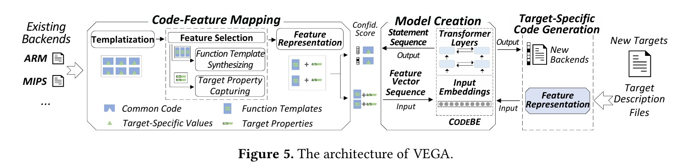

We introduce VEGA, an AI-driven system aimed at easing
the development of compiler backends for new targets. Our
approach involves categorizing functions from existing backends into function groups, each comprising various target
specific implementations of a standard compiler interface
function, abstracted as a single function template. There
fore, generating a new backend involves customizing these
function templates to specific target requirements. To capitalize on AI’s capabilities in code generation, VEGA maps
statements in a target-specific version of a function template into feature vectors, distinguishing between target
independent and target-specific properties. Leveraging a pre-trained model, VEGA can efficiently auto-generate a version
of each function template tailored to a specific target, thereby
enabling the construction of a complete compiler backend
for a new target based solely on its target description files.
We evaluated VEGA on three distinct targets: a CPU processor (RISC-V), a customized processor with instruction
extensions (RI5CY), and an IoT processor (xCORE). VEGA
demonstrated high efficiency, generating compiler backends
under an hour, which can substantially enhance developer
productivity. Across the three targets, VEGA achieved accuracy rates of 71.5%, 73.2%, and 62.2% for all generated
functions, significantly outperforming the traditional forkflow method,
which yielded less than 8% accuracy. Moreover,
VEGA provides explicit confidence scores for generated functions and statements, allowing developers to easily identify
areas requiring minimal manual intervention. This research
has the potential to improve the effectiveness of traditional
compiler backend development.

VEGA is an automated system that uses a pre-trained transformer model to generate compiler backends, identifying target-specific and target-independent features to produce code for new architectures efficiently, requiring only their description files as input.